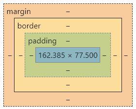
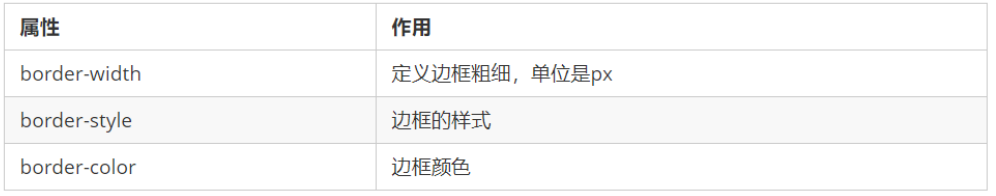
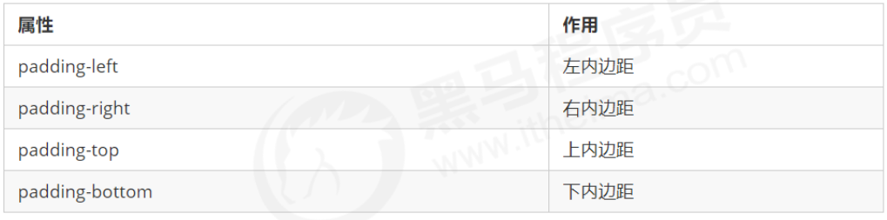
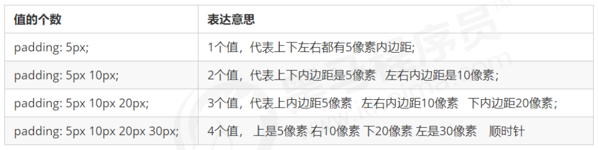
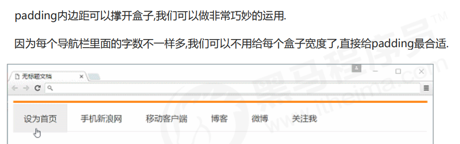
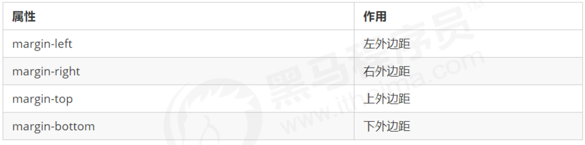
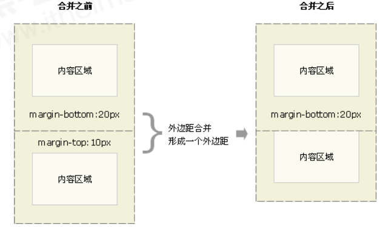
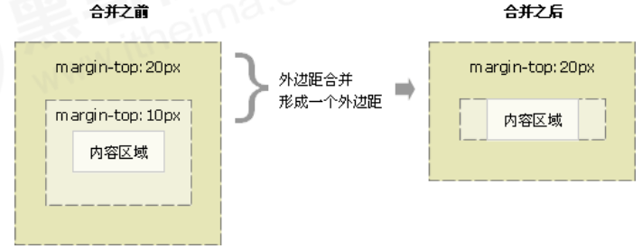
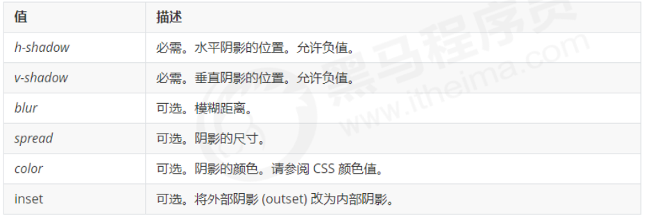
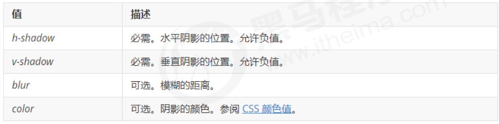

CSS 基础总结 3/7
1 盒子模型
页面布局要学习三大核心：盒子模型，浮动和定位。学习好盒子模型能非常好的帮助我们布局页面。
1.1 看透网页布局的本质
网页布局过程：
- 先准备好相关的网页元素，网页元素基本都是盒子 Box 。
- 利用 CSS 设置好盒子样式，然后摆放到相应位置。
- 往盒子里面装内容。
网页布局的核心本质： 就是利用 CSS 摆盒子。
1.2 盒子模型（Box Model）组成
盒子模型就是把 HTML 页面中的布局元素看作是一个矩形的盒子，也就是一个盛装内容的容器。
CSS 盒子模型本质上是一个盒子，封装周围的 HTML 元素，它包括：边框、外边距、内边距、和实际内容。
1.3 边框（border）
border可以设置元素的边框。边框有三部分组成：边框宽度(粗细)、边框样式、边框颜色。
语法：
border : border-width border-style border-color
边框样式 border-style 可以设置如下值：
- none：没有边框即忽略所有边框的宽度（默认值）
- solid：边框为单实线(最为常用的)
- dashed：边框为虚线
- dotted：边框为点线
CSS 边框属性允许你指定一个元素边框的样式和颜色。
边框简写：
border: 1px solid red; 没有顺序 边框分开写法：
border-top: 1px solid red; /* 只设定上边框， 其余同理 */ 1.4 边框合并（border-collapse）
border-collapse 属性控制浏览器绘制表格边框的方式。它控制相邻单元格的边框。
语法：
border-collapse:collapse;- border-collapse: collapse; 表示相邻边框合并在一起
1.5 边框会影响盒子实际大小
边框会额外增加盒子的实际大小。
因此我们有两种方案解决:
- 测量盒子大小的时候,不量边框
- 如果测量的时候包含了边框,则需要 width/height 减去边框宽度
1.6 内边距（padding）
padding 属性用于设置内边距，即边框与内容之间的距离。

padding 属性可以有一到四个值。

当我们给盒子指定 padding 值之后，发生了 2 件事情：
- 内容和边框有了距离，添加了内边距。
- padding影响了盒子实际大小。
也就是说，如果盒子已经有了宽度和高度，此时再指定内边框，会撑大盒子。
解决方案：
如果保证盒子跟效果图大小保持一致，则让 width/height 减去多出来的内边距大小即可。
如何盒子本身没有指定width/height属性, 则此时padding不会撑开盒子大小。
1.7 外边距（margin）
margin 属性用于设置外边距，即控制盒子和盒子之间的距离。

margin 简写方式代表的意义跟 padding 完全一致。
外边距可以让块级盒子水平居中，但是必须满足两个条件：
- 盒子必须指定了宽度（width）。
- 盒子左右的外边距都设置为 auto 。
.header{ width:960px; margin:0 auto;}常见的写法，以下三种都可以：
- margin-left: auto; margin-right: auto;
- margin: auto;
- margin: 0 auto;
注意：以上方法是让块级元素水平居中，行内元素或者行内块元素水平居中给其父元素添加 text-align:center 即可。
1.8 外边距合并
使用 margin 定义块元素的垂直外边距时，可能会出现外边距的合并。
主要有两种情况:
- 相邻块元素垂直外边距的合并
当上下相邻的两个块元素（兄弟关系）相遇时，如果上面的元素有下外边距 margin-bottom，下面的元素有上外边距 margin-top ，则他们之间的垂直间距不是 margin-bottom 与 margin-top 之和。取两个值中的较大者这种现象被称为相邻块元素垂直外边距的合并。
解决方法：
尽量只给一个盒子添加 margin 值。
- 嵌套块元素垂直外边距的塌陷
对于两个嵌套关系（父子关系）的块元素，父元素有上外边距同时子元素也有上外边距，此时父元素会塌陷较大的外边距值。
解决方法：
- 可以为父元素定义上边框。
- 可以为父元素定义上内边距。
- 可以为父元素添加 overflow:hidden。
1.9 清除内外边距
网页元素很多都带有默认的内外边距，而且不同浏览器默认的也不一致。因此我们在布局前，首先要清除下网页元素的内外边距。
* {
padding:0; /* 清除内边距 */
margin:0; /* 清除外边距 */
}注意：行内元素为了照顾兼容性，尽量只设置左右内外边距，不要设置上下内外边距。但是转换为块级和行内块元素就可以。
2 圆角边框 （border-radius）
在 CSS3 中，新增了圆角边框样式，这样我们的盒子就可以变圆角了。
border-radius 属性用于设置元素的外边框圆角。
语法：
border-radius:length;- 参数值可以为数值或百分比的形式
- 如果是正方形，想要设置为一个圆，把数值修改为高度或者宽度的一半即可，或者直接写为 50%
- 该属性是一个简写属性，可以跟四个值，分别代表左上角、右上角、右下角、左下角
- 分开可写为：border-top-left-radius、border-top-right-radius、border-bottom-right-radius 和 border-bottom-left-radius
- 兼容性 IE9+ 浏览器支持, 但是不会影响页面布局,可以放心使用.
3 盒子阴影 （box-shadow）
CSS3 中新增了盒子阴影，我们可以使用 box-shadow 属性为盒子添加阴影。
语法：
box-shadow: h-shadow v-shadow blur spread color inset; 
注意：
- 默认的是外阴影（outset），但是不可以写这个单词，否则造成阴影无效
- 盒子阴影不占用空间，不会影响其他盒子排列
4 文字阴影 （text-shadow）
在 CSS3 中，我们可以使用 text-shadow 属性将阴影应用于文本。
语法：
text-shadow: h-shadow v-shadow blur color;